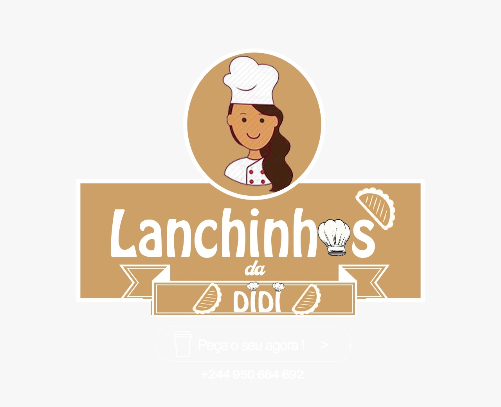
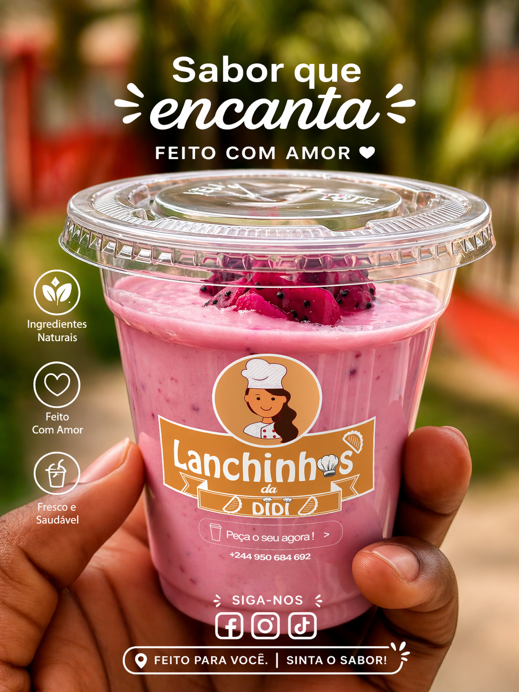
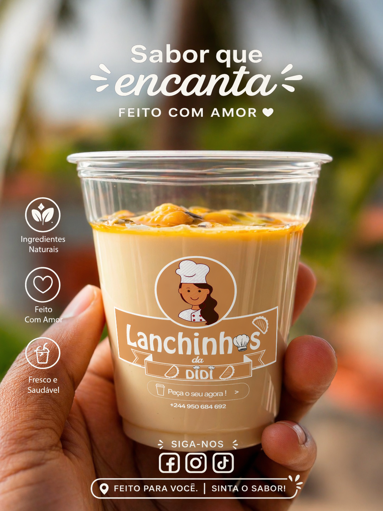
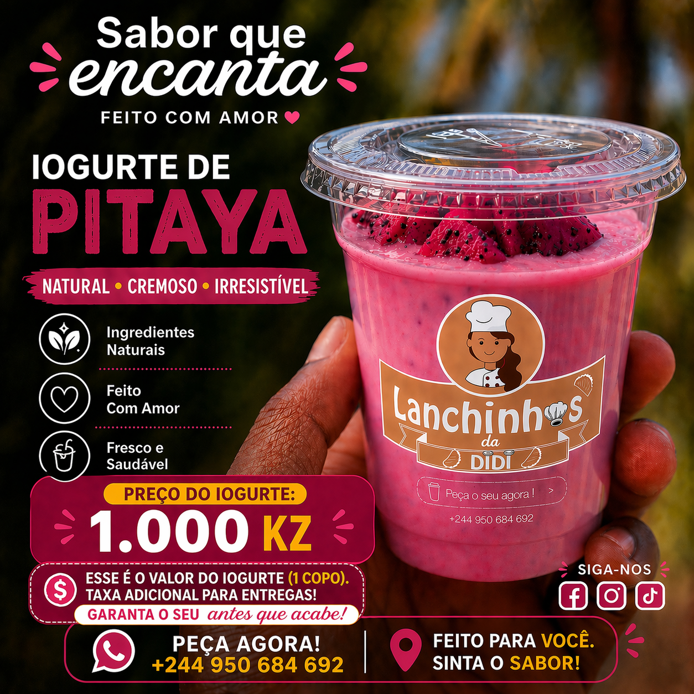
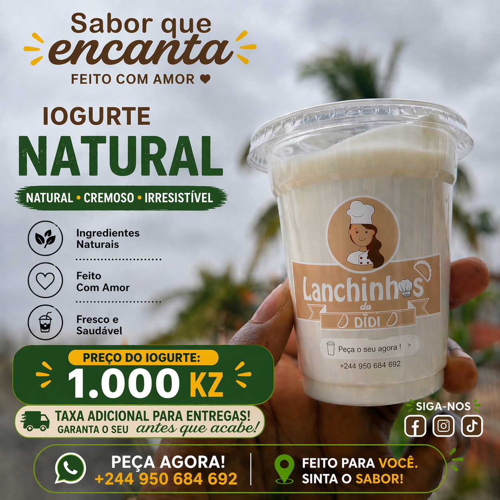
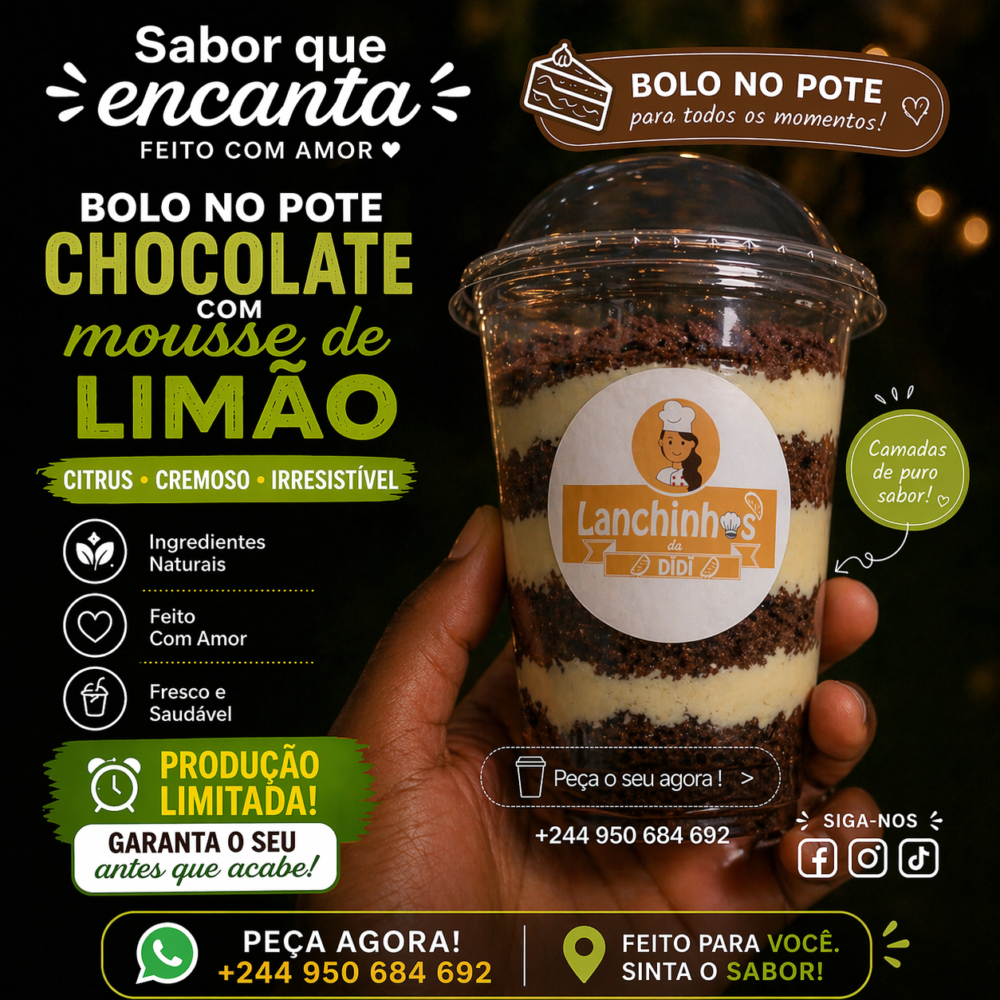
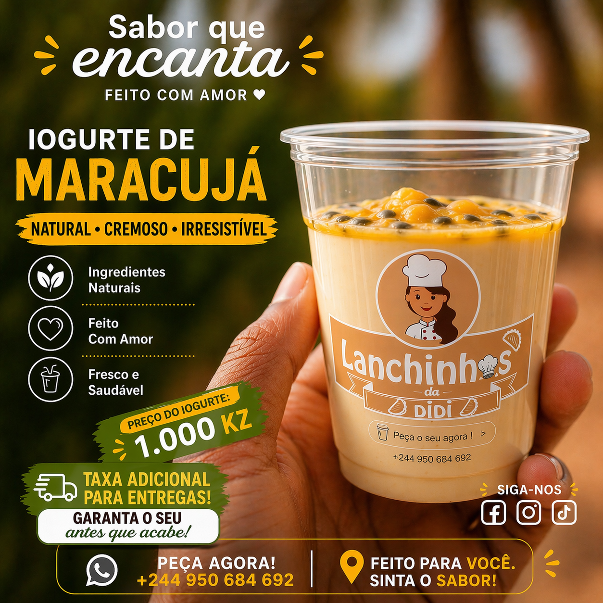
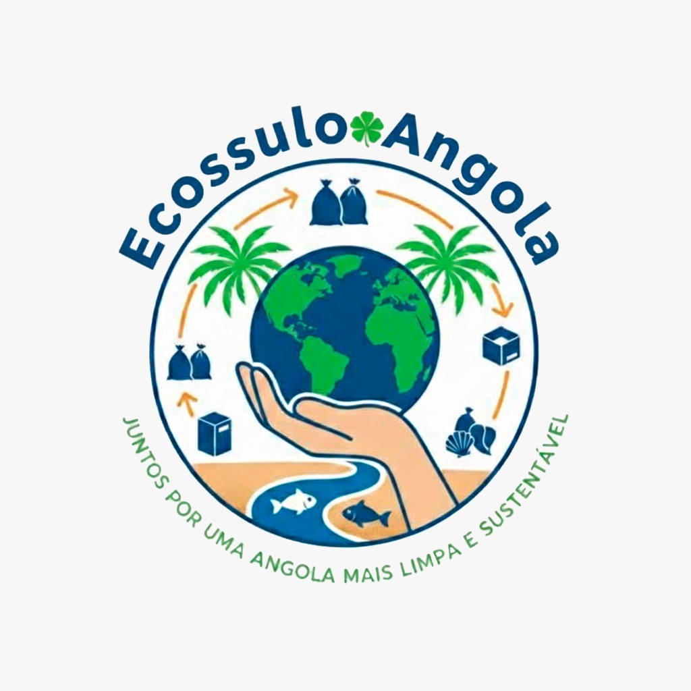

Profissional de perfil duplo com 1.000 horas de formação técnica especializada em Instrumentação & Automação (EDACO — 72% Muito Bom) e Licenciatura ICT com 9 distinções em 26 disciplinas (CPUT). Certificado STCW BST. Disponível de imediato para Oil & Gas, TI e Banca. Dual-profile professional with 1,000 hours of specialist technical training in Instrumentation & Automation (EDACO — 72% Meritorious) and a BSc ICT with 9 distinctions across 26 subjects (CPUT). STCW BST certified. Immediately available for Oil & Gas, IT and Banking.
Graduado na Cape Peninsula University of Technology (CPUT) com 9 distinções em 26 disciplinas — o único angolano da turma com este resultado. Formação industrial especializada na EDACO: 350h de Instrumentação Industrial (66%) e 650h de Automação Industrial (72% — Muito Bom). Fundador da Kazira — startup tecnológica angolana. Membro activo do projecto social Ecossulo Angola.
Graduated from the Cape Peninsula University of Technology (CPUT) with 9 distinctions across 26 subjects — the only Angolan in the cohort to achieve this result. Specialist industrial training at EDACO: 350h Industrial Instrumentation (66%) and 650h Industrial Automation (72% — Meritorious). Founder of Kazira — an Angolan tech startup. Active member of the social project Ecossulo Angola.
Cada marco da minha vida foi um degrau. Aqui está a linha do tempo que me trouxe até onde estou — e que me inspira a continuar.
Every milestone in my life was a stepping stone. Here is the timeline that brought me to where I am — and inspires me to keep going.
Além da formação académica e experiência profissional, participei em programas altamente seletivos e eventos de referência — prova do meu perfil competitivo a nível internacional. Beyond academic training and professional experience, I have participated in highly selective programmes and landmark events — proof of my competitive profile at an international level.
Para além do código, tenho paixão pelo mundo criativo — fotografia, branding e marketing digital. Aqui partilho trabalhos de clientes e momentos pessoais. Beyond code, I have a passion for the creative world — photography, branding and digital marketing. Here I share client work and personal moments.

Identidade visual completa e campanha de marketing digital para negócio de alimentação saudável em Luanda. Logótipo, flyers de produto, conteúdo para redes sociais e design de embalagem personalizada. Complete visual identity and digital marketing campaign for a healthy food business in Luanda. Logo, product flyers, social media content (Instagram, Facebook, TikTok) and custom packaging design.






"Tecnologia com propósito. Feita em Angola, para o mundo." "Technology with purpose. Made in Angola, for the world."
Visão:Vision: Ser a referência angolana em soluções tecnológicas inovadoras, contribuindo para a digitalização do tecido empresarial e social de Angola e da África austral. To be the Angolan reference in innovative technological solutions, contributing to the digitalisation of Angola's business and social fabric and of Southern Africa.
Missão:Mission: Criar software, soluções digitais e conteúdo criativo que resolvam problemas reais, gerem impacto positivo nas comunidades e abram portas para os jovens talentos angolanos. To create software, digital solutions and creative content that solve real problems, generate positive community impact and open doors for young Angolan talent.
Vamos conversar sobre como a Kazira pode ajudar a transformar a tua ideia em realidade.Let's talk about how Kazira can help transform your idea into reality.
Disponível de imediato para emprego a tempo inteiro, estágios e programas de trainee. Instrumentação & Automação (Oil & Gas · Offshore), Software & TI, e Banca — em Angola, Portugal, Europa ou rotação offshore 28/28. Immediately available for full-time roles, internships and trainee programmes. Instrumentation & Automation (Oil & Gas · Offshore), Software & IT, and Banking — in Angola, Portugal, Europe or 28/28 offshore rotation.
Projetos sociais.Social projects.
Para além da tecnologia, acredito no poder da comunidade. Faço parte de iniciativas que criam impacto real em Angola e além. Beyond technology, I believe in the power of community. I am part of initiatives that create real impact in Angola and beyond.

🌱"Juntos por uma Angola mais limpa e sustentável." Iniciativa de sustentabilidade ambiental que promove a consciência ecológica, reciclagem e preservação ambiental em Angola. "Together for a cleaner and more sustainable Angola." Environmental sustainability initiative promoting ecological awareness, recycling and environmental preservation across Angola.